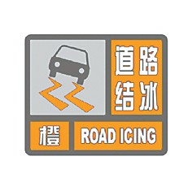

道路结冰预警信号分三级，分别以黄色、橙色、红色表示。
（一）道路结冰黄色预警信号
标准：当路表温度低于0℃，出现降水，12小时内可能出现对交通有影响的道路结冰。
防御指南：1.交通、公安等部门要按照职责做好道路结冰应对准备工作；2.驾驶人员应当注意路况，安全行驶；3.行人外出尽量少骑自行车，注意防滑。
（二）道路结冰橙色预警信号

标准：当路表温度低于0℃，出现降水，6小时内可能出现对交通有较大影响的道路结冰。
防御指南：1.交通、公安等部门要按照职责做好道路结冰应急工作；2.驾驶人员必须采取防滑措施，听从指挥，慢速行使；3.行人出门注意防滑。
（三）道路结冰红色预警信号
标准：当路表温度低于0℃，出现降水，2小时内可能出现或者已经出现对交通有很大影响的道路结冰。
防御指南：1.交通、公安等部门做好道路结冰应急和抢险工作；2.交通、公安等部门注意指挥和疏导行驶车辆，必要时关闭结冰道路交通；3.人员尽量减少外出。